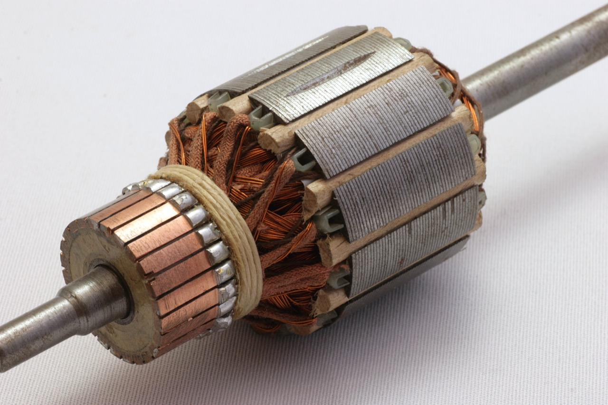
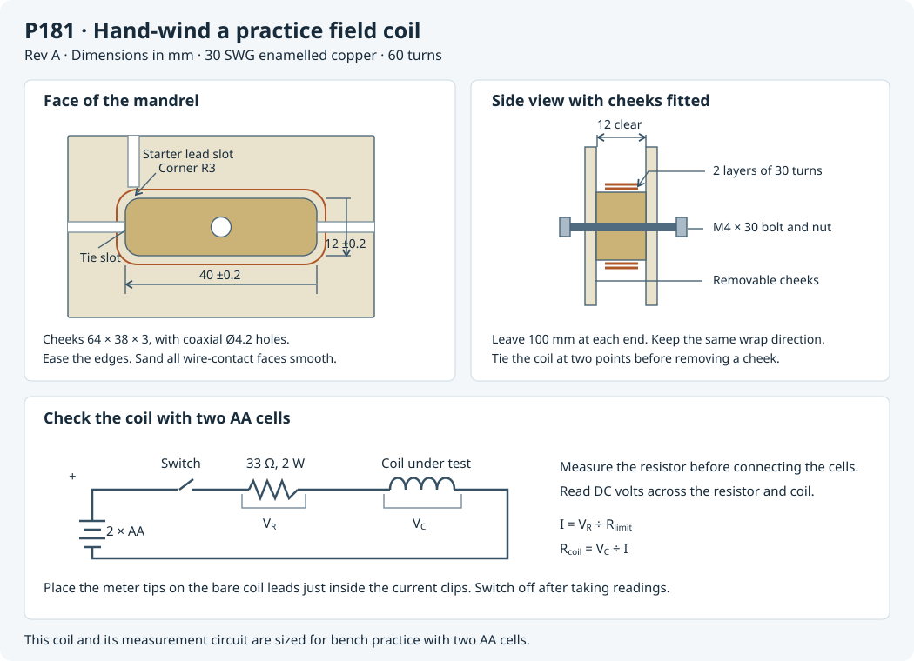

Inspect a corded blower motor and hand-wind a field coil
Use a specific corded blower to learn what the armature, windings, laminated stator, carbon brushes and bearings do. Then make a removable former, wind your own 60-turn sample and check it on a two-AA test circuit.


Photo by Sebastian Stabinger, resized. Original photograph · CC BY-SA 3.0.

Watch how the parts fit. Identify the field, commutator and brushes in the first demonstration. In the second, look at how turns are counted and leads are kept in sequence. The video uses a different motor, so its wire size and turns apply to that motor. NIMI Digital · Construct and test a universal motor · N_martech Electrical · Hand-rewind a universal-motor armature.
Identify the 230 V donor and source its parts
The donor is the Bosch GBL 620 with type number 3 601 J80 5F0. Read the type from the real nameplate. Bosch lists 230 V, 620 W input and 16,000 rpm no-load speed for this version. Its service manual identifies Class II construction. Do this lesson with the donor unplugged throughout. Use loose spare parts if the donor is still in service. Bosch India · Product specifications · Bosch · Operating manual.
| Bosch catalogue item and part | What to inspect | India list price |
|---|---|---|
| 2 · Field assembly, 1 604 220 56J View field coils | Look for two pole faces, coil leads, winding sleeves and the thin insulation between winding and core. Inspect the leads where they leave the steel stack. | ₹794. Field photo · Marrrci, CC BY-SA 3.0. |
| 3 · Armature, 1 604 010 B92 View armature | Inspect the shaft journals, commutator bars, slot wedges and winding ties. Measure slot count and commutator count from the actual part. | ₹687. |
| 10 · Carbon brush, 1 604 321 129 View brushes | Compare brush length, wear shape and free movement on both sides. Ask whether the order unit includes both brushes. | ₹128 per listed order line. Brush photo · Stan Zurek, CC BY-SA 3.0. |
| 13 and 14 · Shaft bearings View bearing rings | 1 900 905 018 is 7 × 22 × 7 mm. 1 900 905 025 is 9 × 26 × 8 mm. Record which bearing came from each end, markings and seating depth. | ₹64 and ₹97. Bearing photo · R. Henrik Nilsson, CC BY 4.0, resized. |
| 4 · Switch, 2 607 200 637 View switch | Record its markings, cord routing, strain relief and lead positions before disconnecting anything. Use the manufacturer's diagram and parts for service. | ₹277. Adepem · Switch photo. |
| 21 · Impeller, 1 606 610 16T View impeller | Record shock marks, chipped blades, housing rub marks and the rotor-to-fan mounting arrangement. Check the actual service drawing for the nut variant. | ₹123. Ultimamac · Supplier photo and alternate source. |


The two wound assemblies are ₹1,481 at the listed prices, or ₹1,642 including both bearings. The figures are Chetan Abrasives' 2026 list prices as checked on 23 November. Confirm stock, tax and shipping for your type code. A failed spare or written-off donor is sufficient for a destructive turn count. Chetan Abrasives, Vadodara · India parts and prices · Bosch India · Type-specific service drawings · Bosch · Catalogue and circuit inset.
Make a winding record before cutting copper
- Start with detached parts or have a power-tool repairer open the unplugged donor. Photograph the two ends and connections. Identify the fan end, commutator end, shaft and bearing shoulders. Label coils F1 and F2. Use the actual diagram and meter readings to identify which field leads are accessible and which are connected internally. In a series-wound universal motor the armature and field carry the same series current.
- Record stator outside dimensions, lamination stack length, pole opening, coil window, end-turn projection, lead sleeve length and where each lead exits. With field leads isolated, measure resistance. For comparable accessible halves, take readings with the same meter and at the same temperature, then compare with a known-good matching part. Log lead resistance before making low-ohm decisions.
- At the rotor, use a removable index mark on one slot and a reference bar beside the mark. Number the slots and commutator bars from the same end and same direction. On a donor meant to be stripped, follow each visible lead from its slot pair to the commutator. Sketch start, finish, slot pitch, winding direction, and whether the coil side is over or under another. Repeat around the rotor before removing wedges or ties. Unequal bar-to-bar readings can point to trouble. Compare with the same reference pattern and send suspects to a rewind shop for a shorted-turn test.
- Unwind one expendable field coil slowly. Count and tally each layer, preserve a short sample of its liner and measure a straight wire piece in several places. First measure over the enamel with a micrometer. Strip a separate small sample without thinning it, then measure bare copper. Record multiple strands separately. Measure three undamaged turn lengths where possible. Mark the lead start, finish and the coil's orientation relative to the pole face. Use the winding record.
Wire area sets resistance and heating with turns, length and current. More insulation thickness consumes slot area. On the armature, slot liners, wedges, lead termination, impregnation, commutator finish and dynamic balance keep those coils in place and working across speed and temperature. The published spare-parts catalogue identifies service parts. The winding record is where you enter construction data measured from the sample. NIMI Electrician Trade Practical · Armature winding and growler exercises · ACC Insulations, India · Examples of motor slot-liner materials.
Buy materials for the 60-turn sample
| Shop item | Specification and use | India buying route or photo |
|---|---|---|
| 1 · Copper reel View wire reel | 50 g of enamelled copper, SWG 30, approximately Ø0.315 mm bare and about Ø0.342 mm coated. Allow 7 m for one coil including leads and handling loss. | Project Point · ₹284.58 for a 50 g reel, select 30 SWG · Precision Wires · Bare conductor sizes. |
| 1 set · Removable former View offcut stock | One hardwood or good 12 mm birch-ply offcut for the mandrel, 3 mm ply for both cheeks, one M4 × 30 bolt and nut with two washers, smooth cotton tying thread and two short sleeves for the tails. See dimensioned drawing. | Ask a local carpentry shop for offcuts and a fastener supplier for the bolt. Plywood photo · Mendaliv, public domain. |
| 1 set · Two-AA supply and 33 Ω resistor View switched holder View resistor types | Covered two-cell holder, two 1.5 V alkaline AA cells, one 33 Ω 2 W resistor and insulated test clips. Put the resistor in series before the coil. Use the switched holder only for this sample. | Kitkraft · Holder ₹59 incl. GST · element14 India · Vishay PR02 33 Ω · Resistor photo · David Ludovino, CC BY-SA 3.0, resized. |


The reel and holder subtotal is ₹343.58 as checked on 23 November 2026. Add cells, resistor, former scrap and delivery. The reel normally has about 70 m, enough for several practice pieces.
Tools. Use a small saw, drill with a Ø4.2 mm bit, smooth file and fine abrasive, cutters, micrometer and a DMM with a DC millivolt range. Clamp the wooden parts for cutting and drilling. Support the reel on a free-running spindle or rod so it cannot drag the wire over a sharp corner.
View coping saw View drill press View micrometer View multimeter


Saw · K. Murray, CC BY-SA 3.0 · Drill press · Plbcr, CC BY-SA 3.0 · Micrometer · ToolBuy · Multimeter · Anselm Schüler, CC BY-SA 4.0.


Make the former and hand-wind the coil


- Cut the mandrel to 40 × 12 mm across the face, 12 mm thick along the winding axis. Round the four face corners to a 3 mm radius. Cut two 64 × 38 × 3 mm cheeks. Stack and clamp the pieces, drill Ø4.2 mm through their centres and check the M4 bolt can pull the cheeks together square.
- Cut an open lead slot on the near cheek and a shallow 2 mm wide tie notch on each narrow face of the mandrel, running along the winding axis. Extend each tie notch out through the cheek edges. File the edges smooth, dust off the wood and thread two tying strings under the area the winding will cross. Keep the strings clear of the ends of the wire. Leave a 100 mm starter tail in the lead slot.
- Wind 30 turns from one cheek towards the other in a single neat layer. Count every full loop at the starting corner. The listed wire occupies about 10.3 mm before winding variation, which fits the 12 mm winding width. Move back towards the first cheek for the next 30 turns while keeping the same direction around the mandrel. Leave a 100 mm finish tail and label the ends A and B.
- Tie the winding at both prepared points. Remove the bolt and near cheek, using gentle finger pressure to slide the winding off the mandrel. Inspect for broken enamel, kinks and trapped threads. Sleeve the tails and strip the last 8–10 mm for clips. Keep bare copper clear of adjacent turns.
With rounded corners and two layers, the mean turn is about 101 mm including the copper build. The finished wire length is about 6.26 m including tails. Using 0.221 Ω/m gives approximately 1.38 Ω at room temperature. Measure the coil rather than using the estimate as a donor specification.
Measure the coil on the bench
- Measure the actual resistance of the loose 33 Ω resistor. With the holder switched off, connect its positive lead to the resistor, the resistor to A, and B to the holder return. Keep the donor motor disconnected and separate. The resistor limits current to about 100 mA or less with fresh 1.5 V cells.
- Switch on briefly. Read the DC voltage across the resistor and then across the two exposed wire ends just inside the current clips. Switch off. Compute current from resistor volts divided by measured ohms, then coil resistance from coil volts divided by current. For example 2.88 V across 33.0 Ω gives 87.3 mA. A reading of 0.121 V across the coil gives 1.39 Ω.
- Use 1.1–1.7 Ω at room temperature as a screening band for this exact practice coil. Check 60 counted turns, two secure ties, stable repeat readings and no visible enamel damage. A resistance check can miss a shorted turn. A rewind shop can compare coils on the same core or check an armature against a good one using a suitable growler and a documented insulation test. Keep this sample on the AA bench fixture.
For a custom powered motor, the rewind shop needs the lead map and turn data plus operating temperature, rated speed and load. Ask for the slot-insulation system, measured winding resistance, commutator and shaft runout, and balance report in the job quote. Prove the completed motor and impeller in their intended guarded enclosure before any duty or sales claim. Test Instrumentation, India · Growler example, confirm 50 Hz suitability when quoting · P180 · Measure shaft runout by hand · P136 · Measure installed airflow.